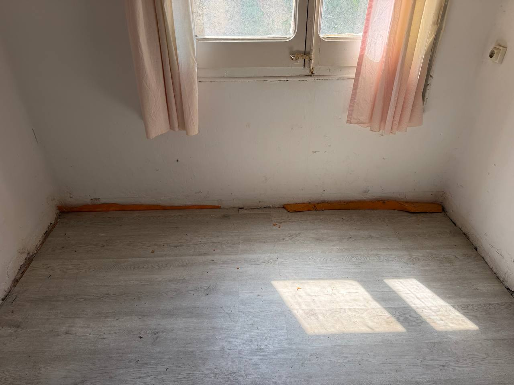

Este artículo se centra en evaluar la extensión de los daños por agua para determinar las acciones necesarias para la restauración. La evaluación de las áreas afectadas es un paso crucial en el proceso de restauración después de un incidente de daño por agua en una propiedad. Esto es fundamental porque ayuda a desarrollar un plan de restauración específico y efectivo adaptado a las necesidades particulares de la propiedad.
Al evaluar las áreas afectadas por el agua, los propietarios pueden comprender mejor la magnitud de los daños y las medidas necesarias para restaurar la propiedad a su estado original. Este proceso implica inspeccionar minuciosamente todas las áreas afectadas, desde techos y paredes hasta pisos y muebles, para determinar el alcance total de los daños.
Uno de los aspectos clave de evaluar las áreas afectadas es identificar las fuentes de agua y determinar si la fuente original del problema se ha resuelto. Es fundamental abordar cualquier problema de fugas o inundaciones para evitar daños continuos y garantizar una restauración efectiva.
Además, la evaluación de las áreas afectadas permite a los propietarios identificar cualquier riesgo potencial para la salud, como la presencia de moho o bacterias, que pueden surgir como resultado de la exposición al agua estancada. Es importante abordar estos problemas de manera oportuna para proteger la salud y el bienestar de los ocupantes de la propiedad.
Una evaluación exhaustiva de las áreas afectadas también es esencial para desarrollar un plan de restauración detallado y personalizado. Al conocer la extensión de los daños, los propietarios y los profesionales de restauración pueden establecer prioridades, asignar recursos de manera eficiente y establecer un cronograma realista para la finalización del proyecto de restauración.
En resumen, la evaluación de las áreas afectadas es un paso crítico en el proceso de restauración después de un incidente de daño por agua. Proporciona la base para un enfoque estructurado y efectivo para la restauración de la propiedad, asegurando que se tomen las medidas adecuadas para abordar todos los aspectos de los daños y devolver la propiedad a su estado original de manera segura y eficiente.
En proyectos de restauración de daños por agua, medir el éxito es crucial para garantizar una recuperación efectiva y completa de las áreas afectadas. La evaluación de las zonas afectadas es un paso fundamental en este proceso, ya que permite determinar el alcance del daño y las acciones necesarias para la restauración. Esta evaluación es esencial para desarrollar un plan de restauración específico y efectivo, adaptado a las necesidades particulares de la propiedad.
Para los propietarios, comprender la importancia de evaluar las áreas afectadas en proyectos de restauración por daños de agua es fundamental para garantizar resultados exitosos. Al conocer el alcance del daño, los propietarios pueden tomar decisiones informadas sobre las acciones necesarias para restaurar su propiedad de manera efectiva.
La evaluación de las áreas afectadas implica una inspección detallada de la propiedad para identificar las zonas donde el agua ha causado daños. Esto puede incluir la revisión de techos, paredes, suelos, sistemas de plomería y otros elementos estructurales y de acabado. Al determinar qué áreas han sido afectadas, los profesionales de restauración pueden desarrollar un plan detallado para abordar cada zona de manera efectiva.
Uno de los beneficios clave de evaluar las áreas afectadas es la capacidad de desarrollar un enfoque de restauración personalizado y orientado a las necesidades específicas de la propiedad. Al comprender el alcance del daño, los profesionales pueden implementar estrategias específicas para restaurar cada área de manera eficiente y efectiva.
Además, la evaluación de las áreas afectadas permite a los propietarios y a los profesionales de restauración establecer expectativas realistas sobre el proceso de restauración. Al comprender qué áreas requieren atención y cuánto tiempo y recursos se necesitarán para completar la restauración, se pueden evitar sorpresas desagradables a lo largo del proceso.
En resumen, la evaluación de las áreas afectadas es un paso crítico en proyectos de restauración por daños de agua. Al comprender el alcance del daño y desarrollar un plan de restauración específico, los propietarios pueden garantizar resultados exitosos y una recuperación efectiva de su propiedad.
Before embarking on any water damage restoration project, a crucial initial step is conducting a comprehensive assessment of the affected areas. This process involves inspecting the extent of the damage caused by water infiltration, identifying areas of concern, and evaluating the structural integrity of the property. By thoroughly assessing the damage, restoration professionals can determine the most suitable techniques and equipment needed to address the issues effectively. Additionally, a detailed assessment helps in estimating the timeline and cost of the restoration project, providing homeowners with a clear understanding of the scope of work required.
Moisture detection plays a significant role in assessing affected areas during water damage restoration projects. Identifying areas where moisture has seeped into walls, floors, or ceilings is essential to prevent mold growth and structural deterioration. Advanced moisture detection tools such as thermal cameras and moisture meters are utilized to pinpoint hidden pockets of moisture that may not be visible to the naked eye. By accurately detecting moisture levels, restoration experts can ensure that all affected areas are thoroughly dried and treated, minimizing the risk of secondary damage.
When assessing affected areas in water-damaged properties, it is crucial to evaluate the type of materials that have been impacted. Different materials, such as drywall, wood, or insulation, react differently to water exposure and require specific restoration approaches. Understanding the properties of various materials helps restoration professionals determine the best course of action for drying, cleaning, or replacing damaged components. By conducting a thorough material evaluation, homeowners can be assured that the restoration process is tailored to preserve the integrity of their property.
Assessing the structural integrity of a building post-water damage is vital to ensure the safety and stability of the property. Water infiltration can weaken structural elements such as beams, columns, and foundations, compromising the overall integrity of the structure. Restoration experts carefully inspect the affected areas to identify any structural damage, assessing whether repairs or reinforcements are necessary. By prioritizing structural integrity assessment, homeowners can rest assured that their property is being restored to a safe and secure condition.
Throughout the assessment of affected areas in water damage restoration projects, maintaining detailed documentation is essential for tracking progress and communicating effectively with homeowners. Documenting the initial damage assessment findings, moisture levels, material evaluations, and structural integrity reports provides a comprehensive overview of the restoration process. This documentation not only serves as a reference for restoration professionals but also helps homeowners understand the steps being taken to restore their property. Clear and thorough documentation ensures transparency and accountability throughout the restoration project.
En proyectos de restauración por daños de agua, medir el éxito es fundamental para garantizar una recuperación efectiva y completa de las áreas afectadas. La evaluación de las zonas afectadas desempeña un papel crucial en este proceso, ya que proporciona información valiosa para desarrollar un plan de restauración personalizado y eficiente, adaptado a las necesidades específicas de la propiedad.
La evaluación de las áreas afectadas es un paso crítico en el proceso de restauración por daños de agua. Este proceso implica determinar la extensión del daño causado por el agua, identificar las áreas que requieren atención inmediata y establecer un plan de acción detallado para abordar los problemas de manera efectiva. Al comprender la magnitud de los daños, los propietarios pueden tomar decisiones informadas sobre los pasos a seguir para restaurar sus propiedades de manera eficiente.
Uno de los aspectos más importantes de evaluar las áreas afectadas es identificar los diferentes tipos de daños causados por el agua. Esto puede incluir daños visibles, como manchas de humedad en techos o paredes, así como daños ocultos, como la presencia de humedad detrás de las superficies. Al determinar la naturaleza y la extensión de los daños, los propietarios pueden trabajar con profesionales de restauración para desarrollar un plan de acción completo que aborde todos los problemas de manera efectiva.
Además de identificar los tipos de daños, evaluar las áreas afectadas también implica determinar la fuente del agua y si existe alguna fuente de contaminación. Esto es crucial para garantizar que se tomen las medidas adecuadas para limpiar y desinfectar las áreas afectadas, evitando así problemas de salud y seguridad para los ocupantes de la propiedad.
La evaluación de las áreas afectadas también juega un papel importante en la prevención de problemas futuros. Al abordar de manera efectiva los daños causados por el agua y desarrollar un plan de restauración completo, los propietarios pueden prevenir la formación de moho, la degradación estructural y otros problemas relacionados con la humedad. Esto no solo ayuda a proteger la integridad de la propiedad, sino que también puede ahorrar tiempo y dinero a largo plazo al evitar reparaciones costosas y extensas en el futuro.
En resumen, medir el éxito en proyectos de restauración por daños de agua comienza con una evaluación exhaustiva de las áreas afectadas. Al comprender la magnitud de los daños, identificar los tipos de daños y desarrollar un plan de acción detallado, los propietarios pueden garantizar una recuperación efectiva y completa de sus propiedades. La evaluación de las áreas afectadas es fundamental para desarrollar un enfoque personalizado y eficiente que aborde las necesidades específicas de cada propiedad, permitiendo a los propietarios restaurar sus hogares de manera segura y efectiva.